A project start date and the end date were defined and the below project life cycle was used to manage the program from start to finish. .
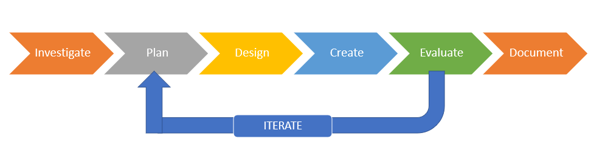In the investigation phase, I aim to capture the details of each user requirement and to understand the scope of the project and how it will be achieved.
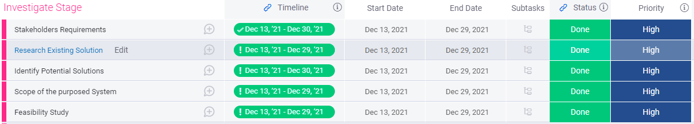During this stage, my goal will be to translate the actual requirements into technical architect design. At this point, I will define the components, programming language, tools, and APIs.
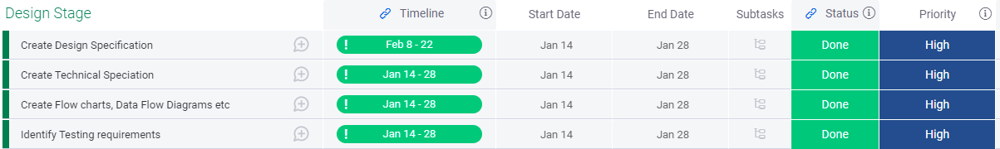During this stage, I would be focused on writing the actual program as well as developing the website and database.
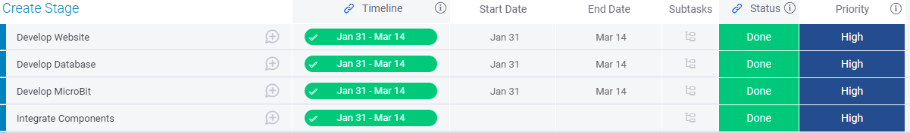During the evaluation phase, I identified the following high-level task. I will test various programs and components to ensure that they work.
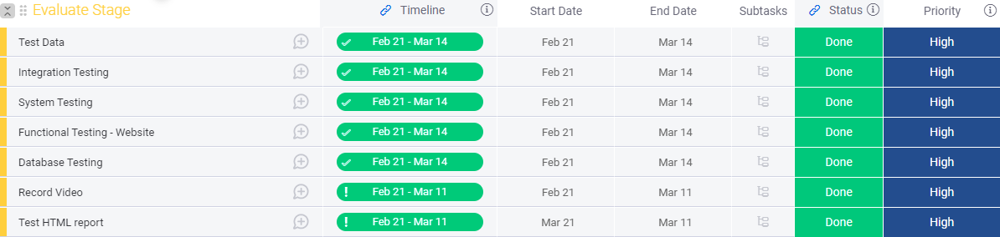In the documentation stage, the following tasks will be completed. The main focus is to complete the documntaion and to create a website for brief.
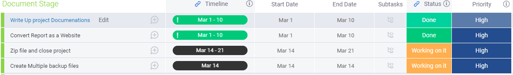Problem 1:Hardware problem: On my Windows computer, the micro:bit was connecting as a drive called MAINTENANCE instead of MICROBIT. . I downloaded and updated the micro:bit firmware with micro:bit V2. Once, updated the micro: Bit worked perfectly |
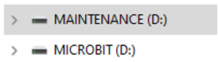 |
| Software Code: | Pictire |
Problem 2:COM 3 port wasn’t opning, which was required to transfer the code within the MicroBit as shown in the diagram. We also found the other software on our laoptop was ustalisng the COM 3 port. This was discovered during the debugging, once the software was disabled/ closed the connection was established with the Datbase and Microbit. |
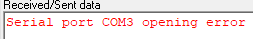 |
| Coding Problem: JavaScript validation rues was’t working on the Register page. | Picture |
| We have used the Plot … library. The CSV file .. However, to solve the issue | Picture |
| Artefact | Components | Demo |
|---|---|---|
| Auto Fan |
1. prepare our Micobit hardware 2. Coded the Microbit python 3. Downloaded the code in Microbit 4: Assemble the Microbit device with IoT sensor. 5: Temp sensor connected with the IoT device 6. Collect the room temp and send it to the server (thingspeak) for live data visualization. |
|
| Auto Light |
1: Prepare our hardware. 2: Coded the MicroBit with python 3: Downloaded the code in Microbit using the USB. 4: Assembled the MicroBit device with light. 5: We created a database within the firebase. The purpose of creating the firebase was to check the status of the devices based on the value On/Off. 6: Clicked On/Off button on the Web page, the script sends data to the Firebase. 7: Whenever the value is turned On/Off the web page updates the database. Upon turning the value On/Off, the python script on our microbit reads the data and turns the MicroBit device On/Off as per the value. 8: In order to communicate with Firebase, Python scripts were written in MicroBit. 9: Connected the micro bit with USB within COM3 port. 10: Using a web page, we can control the LED Lights remotely. (any output device ). 11: The web page updates the firebase database, while the Python script coded within the micro:bit reads the values and controls the device based on the value. (On/Off) |
Please see below an example of programming skills used throughout the project
| Programming Skill | Examples |
|---|---|
| Functions: Function has been used to enhance the readability and to reduce duplication of a program. | 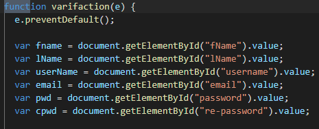 |
| Algorithms: If statements, functions, and loops are used to collect data from Firebase. | 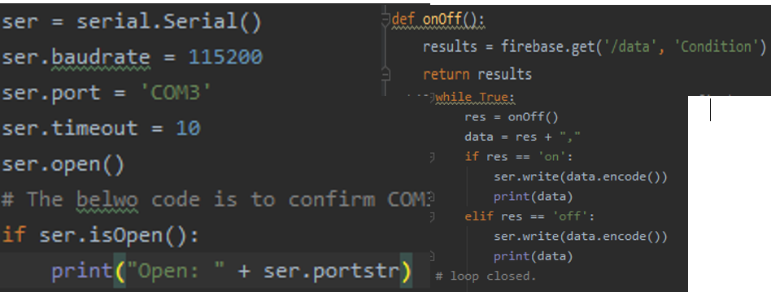 |
| Iteration code: Use of the while loop for updating the database. | 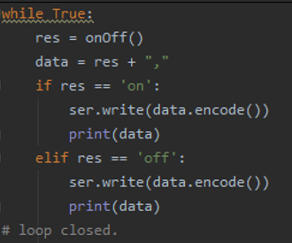 |
| Database Table: Created firebase database. | 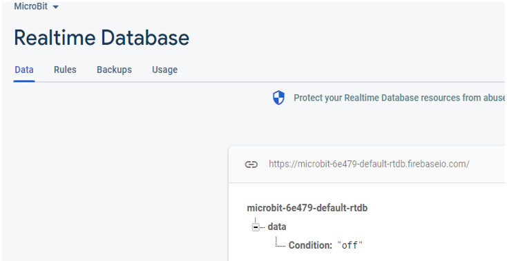 |
| Code Structure | Indents were created. The following software were used to programme the codes. PyCharm, Visual Studio, Makecode, Firbase, BootStrap, etc |
| Data Types: Datatypes such as Strings were used through the programming. | 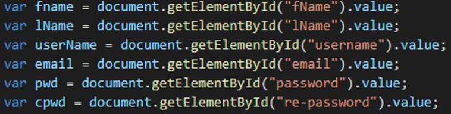 |
| Comments: code is commented. | 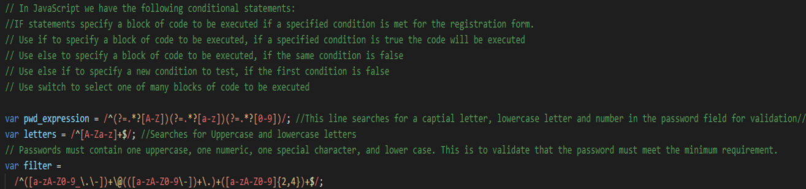 |
To verify that all which individual components that were built work together. We encountered the following issues during the testing, which were later corrected. Please see Pre and post-testing debugs and corrective actions.
| Test Case | Result (Pass/Fail) | Pre - Corrective Action screenshot/ debug | Post –Corrective action | Post Result (Pass/Fail) |
|---|---|---|---|---|
| At the top, click on links to different pages. Verify that the relevant page opens by clicking on each page. | Fail | 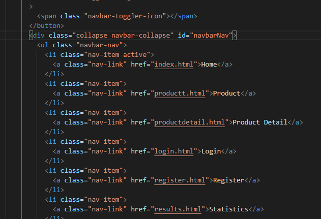 | The page link was fixed after correcting the herf link. . 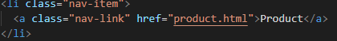 Also added new page. 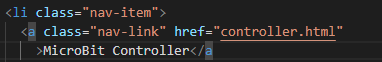 |
Yes |
| Verify the password validation parameters in the "Register" section. It must include one uppercase, one numeric, one special character, and one lowercase character. | Pass | 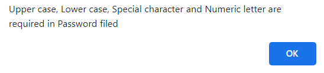 | N/A. | Pass |
| Complete the registration form and submit it. Check for the alerts and redirect messages | Fail | The web page generated the alert message however didn't redirect to the home page. | The "window.location" object used to get the current page (URL) and to redirect the browser to the index page. 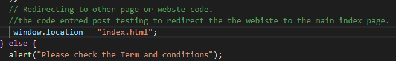 | PASS |
System attesting was carried out to ensure that the whole system fulfills the initial requirements such as turning on/off the lights through the webpage. Function testing was carried out to ensure that its function works correctly. Such API testing was carried out to make sure that graphs' were updated.
| Test Case | Result (Pass/Fail) | Pre - Corrective Action screenshot/ debug | Post Corrective action | Post Result (Pass/Fail) |
|---|---|---|---|---|
| Firebase Database testing. Check that database shows the value of On/Off once the button is clicked from the website. | Pass | Yes. The lights are turned on and the database changes its value. | N/A | Pass |
| Determine whether the Fan automatically turns On/off once the temperature reaches the defined level within the Microbit code. | Pass | Pass. | N/A | Yes |
| Check that the Graphs display the live Temperature data variation. | Fail | 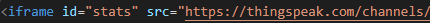 | Updated the source code. The website shows the live data. | Pass |
| While clicking the buttons on the webpage, verify that the Graphs display the Monthly, Weekly, and Daily data. | Pass | Pass. No action required. | N/A | Pass |
Acceptance testing was to determine that all the functions worked as per user requirements.
| Test Case | Result (Pass/Fail) | Pre - Corrective Action screenshot/ debug | Post Corrective action | Post Result (Pass/Fail) |
|---|---|---|---|---|
| Check if all the functional and design specifications met the user requirements. | Pass | N/A. All worked accordingly. | N/A | Pass |